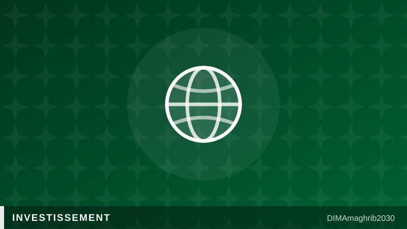

15 milliards de dollars sur 10 ans : le pari de la Banque mondiale sur le secteur privé marocainMorocco's $15 Billion World Bank Deal: Betting Public Investment Gains on Private-Sector Growth

Le Maroc et le Groupe de la Banque mondiale viennent d'ouvrir un chapitre financier d'une tout autre ampleur que les approbations de projets ponctuels auxquelles l'institution nous a habitués. Selon une annonce relayée par Financial News Hebdo (FNH), les deux parties ont scellé un partenariat de 15 milliards de dollars étalé sur dix ans, dont l'objectif affiché n'est pas seulement de financer de nouvelles infrastructures, mais de convertir deux décennies d'investissement public marocain en un moteur d'investissement privé, de productivité et de création d'emplois. C'est, en somme, un changement de logique : après des années où l'État a posé les fondations, la Banque mondiale Maroc 2026 mise désormais sur la capacité du secteur privé à prendre le relais de la croissance.
Une charte de l'investissement qui commence à porter ses fruits
Ce pari n'est pas formulé dans le vide. Trois ans après l'entrée en vigueur de la nouvelle Charte de l'investissement Maroc, le pays affiche un portefeuille de 391 conventions signées, représentant 520 milliards de dirhams, rapporte Financial Afrik. Ce chiffre, qui dépasse largement les ambitions initiales du texte, illustre l'appétit persistant des investisseurs, marocains comme étrangers, pour un cadre incitatif jugé plus lisible et plus rapide que l'ancien régime des conventions au cas par cas. C'est précisément ce terreau que la Banque mondiale entend cultiver avec son nouvel engagement décennal, en misant sur l'idée que la stabilité réglementaire, une fois installée, doit désormais se traduire en capitaux privés effectivement déployés.
Le calendrier budgétaire renforce cette dynamique. D'après le Projet de loi de finances cité par FNH, l'investissement public Maroc 380 milliards de dirhams est projeté pour 2026, tous secteurs confondus — un niveau inédit dans l'histoire budgétaire du pays. Ce mur d'investissement public, loin d'être une fin en soi, est présenté par les autorités comme un levier destiné à irriguer les chaînes de valeur locales, à générer de la commande pour les entreprises marocaines et, in fine, à alimenter le financement entreprises marocaines par effet d'entraînement sur la demande privée.
Le capital-investissement et les banques rejoignent la partie
Signe que cette bascule vers le privé est déjà à l'œuvre sur le terrain financier, le secteur du capital-investissement Maroc a levé 6,6 milliards de dirhams en 2025, avec 4,2 milliards de dirhams de sorties enregistrées la même année, selon les données publiées par Financial Afrik. Ces chiffres traduisent un écosystème de private equity Morocco 2026 qui gagne en maturité, capable à la fois de mobiliser des capitaux frais et d'offrir des sorties crédibles aux investisseurs, un équilibre longtemps considéré comme le maillon faible du marché marocain.
Du côté bancaire, Crédit du Maroc a choisi ce moment pour muscler son pôle de banque d'investissement, un repositionnement que FNH interprète comme le signal d'un secteur bancaire privé qui anticipe désormais le cycle de croissance plutôt que de simplement l'accompagner. Entre une charte d'investissement qui a fait ses preuves, un mur d'argent public sans précédent et un capital-investissement en consolidation, le Maroc semble réunir, sur le papier du moins, les ingrédients que la Banque mondiale a choisi de parier pour la prochaine décennie. Reste à savoir si cette conversion de l'investissement public en croissance privée saura résister aux aléas budgétaires et géopolitiques qui pourraient redessiner les priorités d'ici 2035.
For years, the World Bank's engagement with Morocco has been measured project by project. That changed with the announcement of a new $15 billion partnership spanning ten years, one explicitly designed not simply to fund more infrastructure but to convert two decades of public investment gains into private investment, productivity and job creation, according to reporting by Financial News Hebdo (FNH). The framing matters: this is less a financing announcement than a bet that Morocco's public-sector groundwork has matured enough for private capital to take the lead. It marks one of the more structurally ambitious Morocco World Bank partnership arrangements in recent memory, and it lands at a moment when the country's reform architecture is already showing measurable traction.
A track record the Investment Charter can point to
The bet is not being made blind. Three years after Morocco's new Investment Charter took effect, the country's project portfolio stands at 391 signed agreements worth 520 billion dirhams, according to figures reported by Financial Afrik. That volume suggests the streamlined framework — built to replace slower, case-by-case negotiated conventions — has genuinely reshaped how investors, domestic and foreign alike, engage with the Moroccan market. It is this foundation the World Bank appears to be building on, treating regulatory stability as the precondition rather than the endpoint for private capital mobilization.
The public budget is reinforcing that momentum from another direction. Per Morocco's 2026 Finance Bill, cited by FNH, public investment across all sectors is projected to mobilize 380 billion dirhams next year, an unprecedented level in the country's fiscal history. Officials frame this wall of state spending not as an end in itself but as a deliberate lever meant to feed local supply chains, generate contracts for domestic firms, and ultimately expand financing available to Moroccan businesses through the demand it creates downstream — a dynamic central to the broader Morocco private sector growth narrative the World Bank is now betting on.
Private equity and banks are already repositioning
There is evidence the pivot toward private capital is already underway on the ground. Morocco's private equity and venture capital sector raised 6.6 billion dirhams in 2025, with 4.2 billion dirhams in exits recorded the same year, according to Financial Afrik. Those numbers point to a private equity Morocco 2026 landscape that is maturing on both ends — able to attract fresh capital while also delivering credible exits, a balance long seen as the market's weak spot.
On the banking side, Crédit du Maroc has chosen this moment to scale up its investment banking arm, a move FNH reads as evidence that private lenders are now positioning ahead of the growth cycle rather than simply reacting to it. Between a proven Investment Charter, a record wall of public money, and a consolidating private equity sector, Morocco appears to hold, at least on paper, the ingredients the World Bank has chosen to stake its next decade on. Whether that conversion of public investment into durable private growth can withstand the fiscal and geopolitical shifts likely to unfold before 2035 remains the open question.